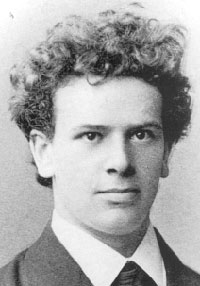
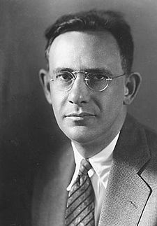

Beatriz Reyes-Foster
Module 4: Supplementary Material
Before You Read
In this module, you have two assigned readings. Our first reading, from our textbook, deals with the history of linguistic relativity: the idea that language and thought are intimately connected and that both can and do influence each other. Central to our understanding of the relationship between language, thought, and culture is the so-called Sapir-Whorf Hypothesis, an often-misunderstood axiom of linguistic relativity. As you read, pay special attention to the debates surrounding the Sapir-Whorf hypothesis, and be sure to have a clear understanding of how anthropologists today seek to understand the connections between language, thought, and culture. Subsequently, the author considers recent research investigating the effects of language on thought through experimental methods. Citing the work of John Lucy, Ahearn identifies three areas of investigation: language-in-general, linguistic structures, and language use. In this last section, Ahearn references our other assigned reading for this week: Carol Cohn’s article Sex and Death in the Rational World of Defense Intellectuals. I suggest you go back and re-read Ahearn’s discussion of Cohn’s thesis (Ahearn pgs. 93-94) after you read Cohn’s article. How does your understanding of Cohn’s argument contrast with Ahearn’s?
Remember, terms that have been emphasized require special attention and are likely to appear in tests or quizzes. The supplementary materials in this module are meant to better illustrate the concepts and ideas discussed in the reading.
Focus Points
As you read, you must pay special attention to the following themes, concepts, and issues:
- Who are the intellectual founders of linguistic anthropology? What did they study? What did they conclude?
- What is the Sapir-Whorf hypothesis? What is it not? What is an axiomatic view?
- How have the effects of language on thought been investigated? Be able to list and describe all three of Lucy’s “broad areas” of research.
- What are semantic domains vs. grammatical categories? How have they been studied by linguists and linguistic anthropologists? Provide specific examples.
- How does Cohn’s article present an interesting example of the relationship between language and thought through language use?
Historical Figures
Make sure you are familiar with each of these important figures in anthropological history, their ideas about language and thought, and how they knew each other.
Image Below: Photograph of 19-year-old Franz Boas

Image Below: Edward Sapir

Image Below: Benjamin Lee Whorf
Theory of Mind and Language in General
False-Belief Tests
As you read in your textbook, linguists, psychologists, and linguistic anthropologists often look to children when they want to learn something about language. This is because young children are in the process of learning language, so observing how young children acquire language –how their abilities and perceptions about the world shift as language becomes an increasingly important filter through which they see the world—can tell us a lot about the nature of language itself and the relationship between language and thought.
A key concept in developmental psychology is theory of mind, our ability to read intent, emotions, and actions in others. It is central to our ability to empathize with others and to the development of our social skills. A false-belief test is a test devised to determine whether or not a child has developed theory of mind. This video shows a great example of a False-Belief test.